Univers Galactique ®
Explora la historia espacial, misiones lunares, animales, satélites y el futuro del universo
Inicio
El espacio exterior es una de las áreas más fascinantes de la ciencia. En él se encuentran planetas, estrellas, galaxias, cometas, asteroides, satélites naturales y artificiales.
La humanidad siempre ha sentido curiosidad por el cielo. Primero observó las estrellas para orientarse y medir el tiempo. Después creó telescopios, cohetes, satélites y naves espaciales para explorar más allá de la Tierra.
Hoy, la exploración espacial permite estudiar el clima, las comunicaciones, la tecnología, la Tierra, la Luna, Marte y otros mundos.

Planetas
Son cuerpos celestes que orbitan una estrella.

Estrellas
Producen luz y energía, como nuestro Sol.

Galaxias
Son enormes grupos de estrellas, gas y polvo cósmico.
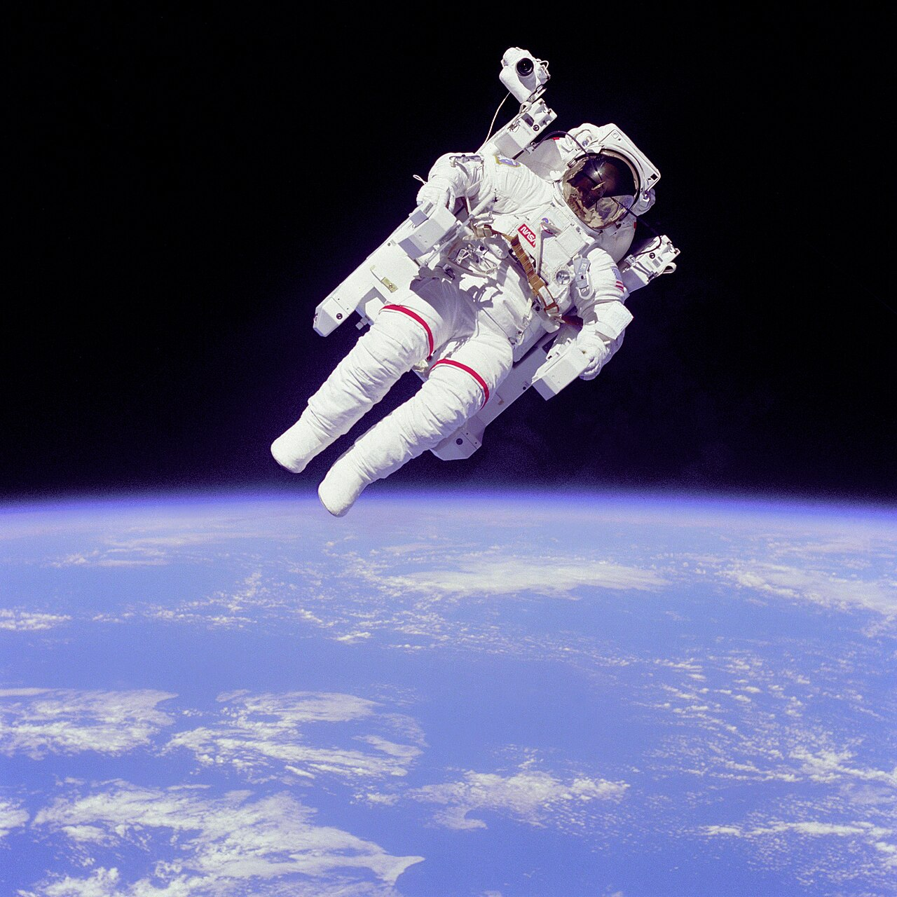
Astronautas
Personas preparadas para trabajar fuera de la Tierra.
Línea de tiempo: humanos y el espacio
1609
Galileo Galilei observó el cielo con telescopio y ayudó a cambiar la forma en que se entendía el universo.
1957
Se lanzó el Sputnik 1, el primer satélite artificial en orbitar la Tierra.
1961
Yuri Gagarin se convirtió en el primer ser humano en viajar al espacio.
1969
Apollo 11 llevó a Neil Armstrong y Buzz Aldrin a caminar sobre la Luna.
1998
Comenzó la construcción de la Estación Espacial Internacional.
2020
Guatemala participó en la exploración espacial con Quetzal-1, el primer satélite guatemalteco.
2026
Artemis II marcó el regreso de astronautas a una misión alrededor de la Luna.
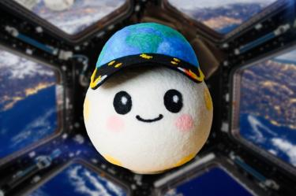
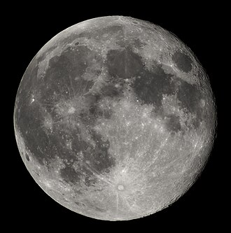
Personas importantes en la exploración espacial
La exploración espacial no depende solo de astronautas. También participan matemáticos, ingenieros, físicos, programadores, técnicos, científicos y diseñadores.

Yuri Gagarin
Primer ser humano en viajar al espacio en 1961.
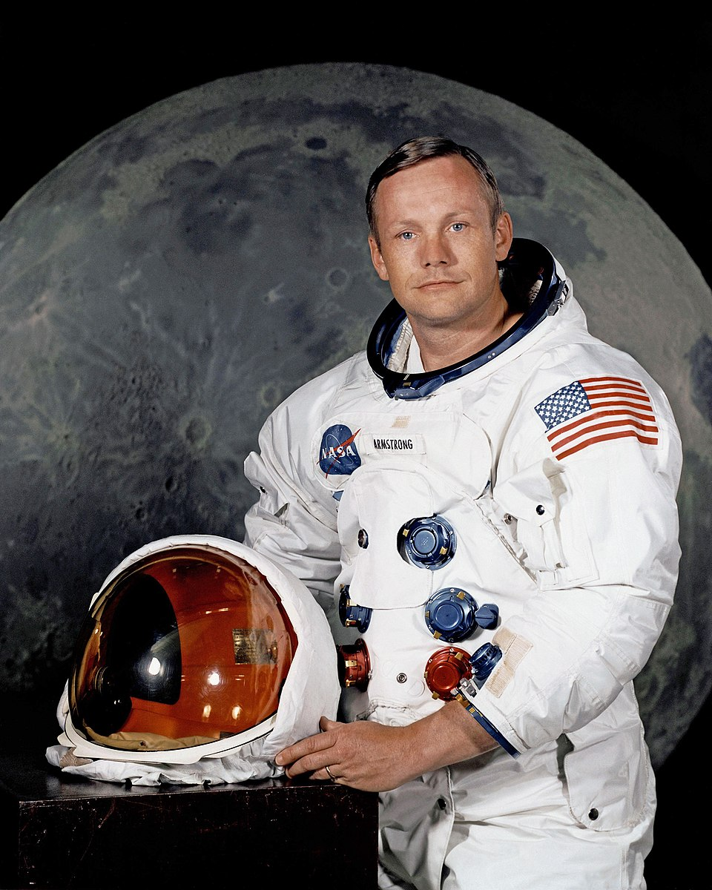
Neil Armstrong
Primera persona en caminar sobre la Luna en 1969.
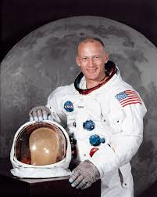
Buzz Aldrin
Segundo ser humano en caminar sobre la Luna.
Katherine Johnson
Matemática que realizó cálculos importantes para misiones de la NASA.

Christina Koch
Astronauta de NASA y parte de la tripulación de Artemis II.

Victor Glover
Piloto de Artemis II y astronauta de NASA.
Animales en la exploración espacial
Antes de enviar humanos al espacio, se enviaron animales para estudiar los efectos del vuelo espacial en seres vivos. Estos viajes ayudaron a preparar misiones humanas.
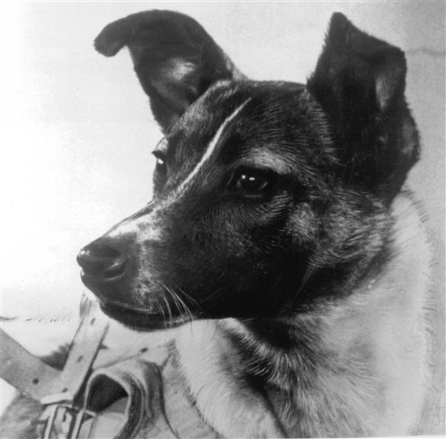
Laika
Perrita enviada al espacio en Sputnik 2 en 1957.
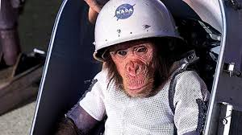
Ham
Chimpancé que viajó en una misión suborbital en 1961.
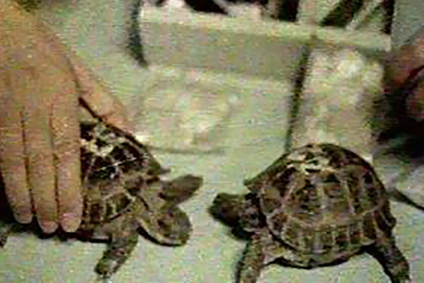
Tortugas
Algunos animales ayudaron a estudiar los efectos del espacio.
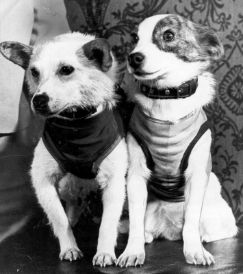
Belka y Strelka
Perros soviéticos que regresaron vivos después de orbitar la Tierra.
Quetzal-1 y Quetzal-2
Quetzal-1
Quetzal-1 fue el primer satélite guatemalteco. Fue desarrollado por estudiantes, docentes e investigadores de la Universidad del Valle de Guatemala.
Su lanzamiento en 2020 representó un logro histórico para Guatemala, porque permitió que el país participara en tecnología espacial y formación científica.
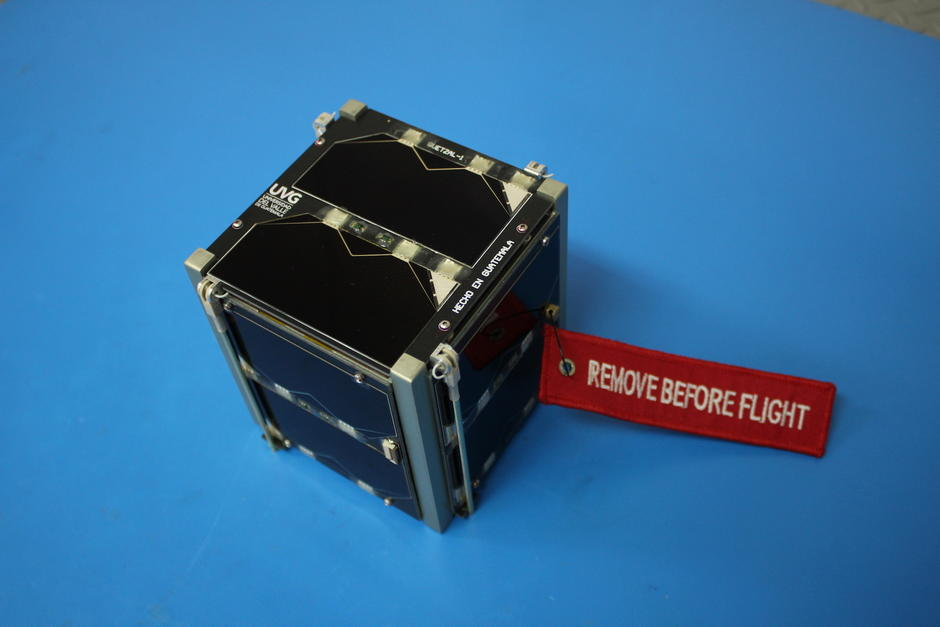
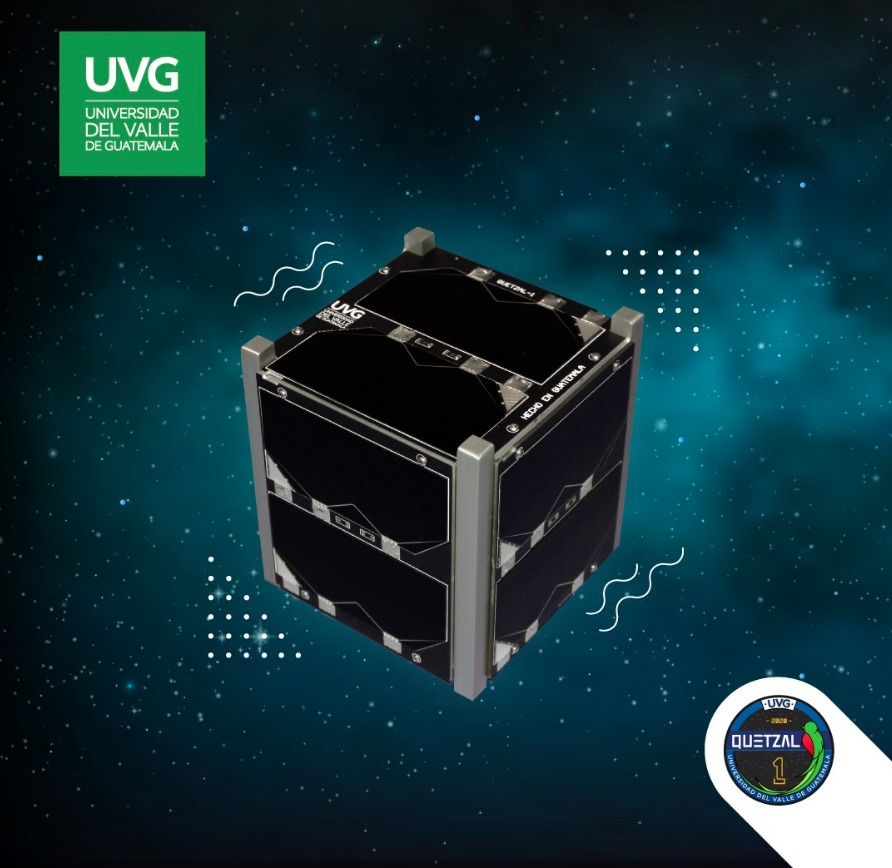
Quetzal-2
Quetzal-2 es el segundo proyecto satelital de UVG. Según UVG, el proyecto avanza con apoyo de Exolaunch y su lanzamiento está proyectado para 2028.
Este proyecto involucra a estudiantes y busca fortalecer el desarrollo aeroespacial en Guatemala.
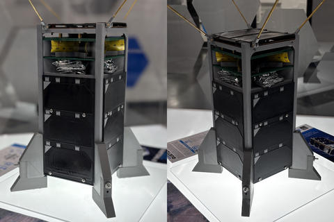
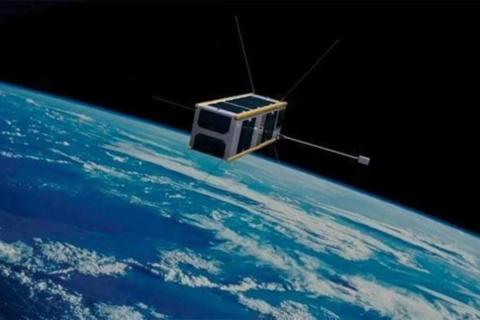
Artemis II
Artemis II es una misión de NASA relacionada con el regreso de humanos a la Luna. Su objetivo fue probar la nave Orion y el cohete SLS con astronautas a bordo.
La tripulación de Artemis II está formada por Reid Wiseman, Victor Glover, Christina Koch y Jeremy Hansen.
Esta misión es importante porque ayuda a preparar futuras misiones a la superficie lunar y a Marte.

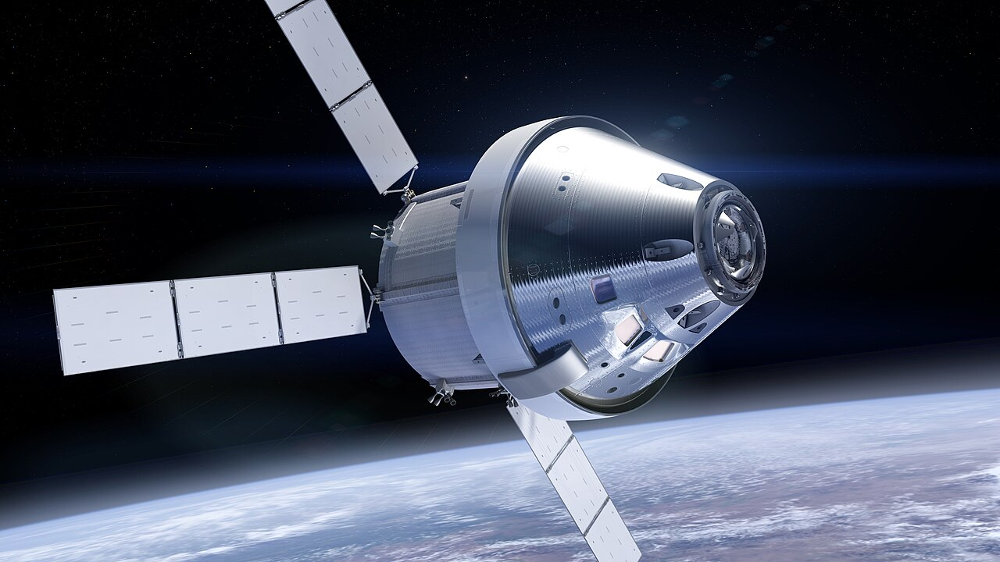
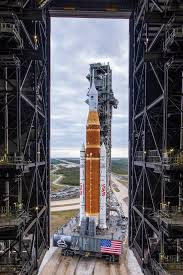
Videos sobre el espacio
Videos de YouTube sobre el espacio, la Luna, Artemis y exploración espacial.